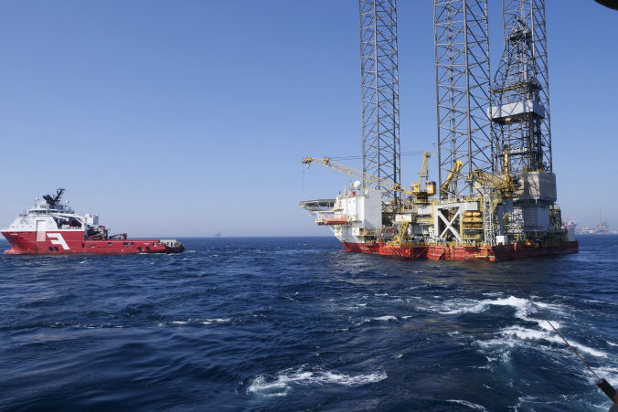

Independent advice
We are not a technology vendor, EPC contractor or investment bank.
Independent technical advisory & project development
Independent expertise at every stage — from feasibility to operations.
Engineering understanding.Commercial discipline.
ScrollWho we are
Majlis Energy is an independent project development and technical advisory company focused on energy and circular infrastructure.
We combine engineering understanding, commercial thinking and structured project development to help clients develop technically sound and commercially viable projects.
Since 2018, we have built our capability through technology research, university and engineering collaboration, feasibility analysis and independent technology evaluation. We now apply that foundation to technical advisory, project development and capital-readiness support.
Established with a focus on circular economy and energy transition.
Integrated service areas, from technical advisory to project-finance preparation.
Stages in a structured path, from initial discussion to implementation support.
Project and advisory workstreams across recycling and infrastructure.
Why Majlis Energy
We are not a technology vendor, EPC contractor or investment bank.
Hands-on EPC, process engineering and project delivery experience informs our work.
We connect technical feasibility with commercial viability and financing readiness.
We evaluate technologies objectively against the needs of each project.
We coordinate the technical, commercial and stakeholder workstreams that take an industrial project forward.
We work across engineering, finance, legal and commercial disciplines to maintain momentum and governance.
How we work
Six stages that connect technical review, commercial assessment and engineering coordination — through to operations.
Your objectives, constraints and timeline.
Technology viability, engineering needs and operational feasibility.
Markets, feedstock, offtake and capital requirements.
Technical design, contractors and project planning.
Financing readiness, stakeholders and regulatory requirements.
Ongoing advisory and technical oversight through to operations.
Who we work with
We work with industrial companies, asset owners, project developers, technology firms, infrastructure investors, lenders and EPC partners.
Our services
Majlis Energy provides independent technical advisory and project development support for industrial infrastructure, circular-economy and energy-transition projects.
Independent, technology-neutral assessment of the technical basis of your project.
Structure and coordinate industrial projects from early assessment through implementation support.
Connect engineering decisions with project economics and financing readiness.
Majlis Energy does not provide regulated investment advice or generic financial services.
An enabling capability that brings the right expertise into each stage of a project.
Current focus
Our present priorities span circular economy, resource recovery and energy transition.

Tyre, plastics and resource-recovery project development.
Industrial processing and waste-to-value infrastructure.
Structuring technically sound and commercially viable industrial projects.
Independent evaluation and due diligence for energy transition assets.
Selected experience
Each workstream carries a factual status label. Client, counterparty and commercial details remain confidential.
Under Development
Development of an advanced UK tyre-recycling project integrating proven process technology, engineering, feedstock, product offtake and institutional project-finance preparation.
Research & Evaluation
Technical and commercial development of modular plastics-recycling infrastructure, including process optimisation, product qualification and industrial offtake pathways.
Advisory Engagement
Independent technical review and commercial assessment of third-party energy and industrial infrastructure projects.
Research & Evaluation
Independent technology screening, feasibility assessment and collaboration with technical and academic specialists to evaluate process performance and project suitability.
Investment Preparation
Commercial modelling, risk allocation and project-finance preparation designed to improve the bankability and institutional readiness of infrastructure projects.
Developing an industrial, recycling or energy infrastructure project?
Discuss your projectLeadership
Founder & Chief Executive Officer
Infrastructure developer and project finance specialist with more than fifteen years’ international experience spanning circular economy, sustainable infrastructure, capital markets and strategic partnerships.
Process Engineering & Technical Advisory
Process design and engineering support.
Project & EPC Delivery
27 years leading oil and gas projects and operations worldwide. EPC, offshore, LNG, process and construction delivery.
Finance & Commercial Modelling
Finance and commercial structuring.
Business Consultant
Commercial coordination, CRM and pipeline management, proposal and report support, document control, and coordination across engineering, finance, legal and commercial workstreams.
Articles & insights
A perspective on the transition from a linear plastics industry to a circular economy.
An analysis of collection and recycling approaches for flexible plastic packaging in the UK.
Comparing the economics and environmental considerations of refining and recycling.
Contact us
For technical advisory, project development and partnership enquiries.
We aim to respond to all enquiries within two business days.
Connect on LinkedIn (opens in new tab)